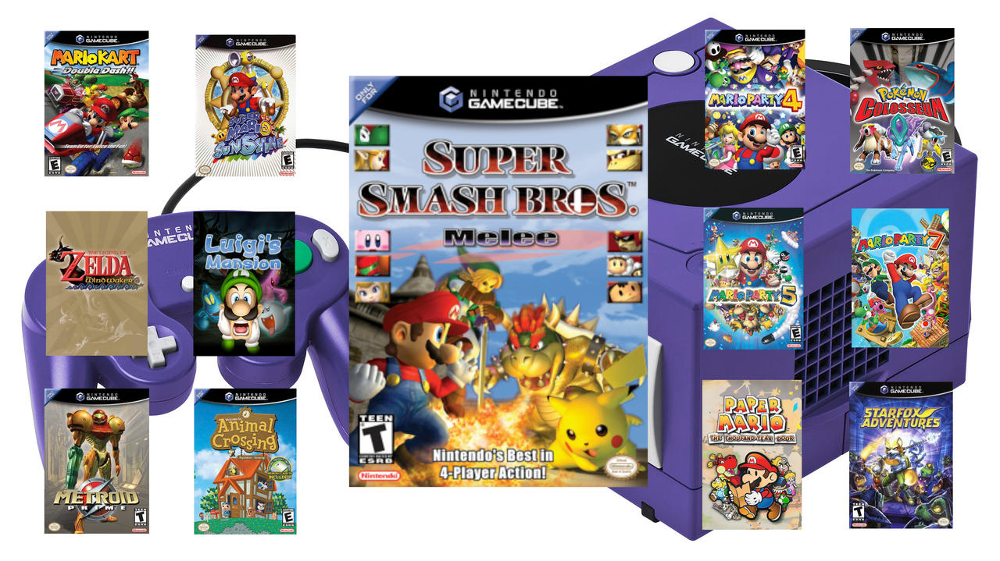

Why the nintendo Gamecube is the one of the best
The Nintendo GameCube is a home video game console that was developed and released by Nintendo as part of the sixth generation of gaming consoles. It was the successor to the Nintendo 64 and predecessor to the Nintendo Wii. Here’s a detailed overview of the GameCube
Release and Timeline
Release Date: The GameCube was first released in Japan on September 14, 2001, followed by North America on November 18, 2001, Europe on May 3, 2002, and Australia on May 17, 2002. The console was in direct competition with the Sony PlayStation 2, Microsoft Xbox, and Sega Dreamcast.
Design and Features
- Compact Cube Shape: The GameCube’s design was a small, cubic form, which made it one of the smallest home consoles at the time. It was approximately 5.9 inches (15 cm) tall and 6.3 inches (16 cm) wide.
- Handle: A notable feature of the GameCube was the built-in handle on the back of the console, making it one of the most portable consoles of its time.
- Mini-DVD Discs: Instead of using cartridges like earlier Nintendo systems, the GameCube used mini-DVD discs (8 cm diameter). These discs were capable of holding up to 1.5 GB of data, a bit less than the standard DVDs used by other consoles like the PS2 and Xbox.
Games Games and... Games
While the GameCube had a smaller library compared to other consoles, it had some of the most critically acclaimed and beloved games in gaming history.
- Smash Bros. Melee
- The Legend of Zelda: The Wind Waker
- Metroid Prime
- Mario Sunshine
- luigi's Mansion
- Mario Kart: Double Dash! !
- Animal Crossing
- Mario: The Thousand-Year Door
overview
With so many great things to say about the gamecube its clear. Its one of the best consoles ever made. The Nintendo GameCube may not have been the highest-selling console of its era, but it was beloved by many for its solid library of games, innovative controller, and unique features that focused heavily on fun, multiplayer experiences, and Nintendo's hallmark franchises. Its legacy is still felt in modern gaming.